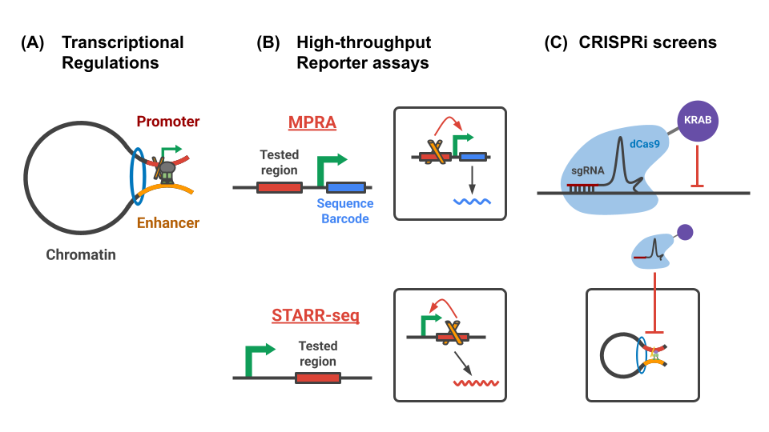

ENCODE Project: Functional characterization of regulatory regions using genome-wide functional screens and chromatin interactions
Introduction
Establishing non-coding mechanisms for disease remains a major goal in human genetics. Identifying the genomic mechanisms that contribute to gene regulation is critical to achieving that goal. Two promising technologies for identifying those mechanisms are high-throughput reporter assays and CRISPR screens.

Objectives
This site documents a segment of the analyses conducted by the ENCODE Functional Characterization Center (FCC) working group. In this series of analyses, we have integrated data from STARR/MPRA/CRISPRi/Hi-C assays with genomic annotations of chromatin states (cCREs/ChromHMM) and transcription factor (TF) binding sites to:
This site documents a part of analyses in the ENCODE FCC working group. In this series of analyses, we integrated the STARR/MPRA/CRISPRi/Hi-C assays with genomic annotations of chromatin states (cCREs/ChromHMM) and TF binding sites in order to:
- Qualitatively summarize the regulatory regions identified through STARR/MPRA/CRISPRi assays.
- Quantitative compare the regulatory effects measured in STARR/MPRA/CRISPRi assays
- Investigate the physical interactions of the regulatory regions using the Hi-C assay
 Figure. The ENCODE resource of functional characterization assays and functional genomic data in K562. Phase 4 of the ENCODE project included a coordinated effort across eight labs to functionally characterize human gene regulatory elements using high-throughput reporter assay screens (ATAC-STARR-seq, WHG-STARR-seq, Tiling-MPRA, and Lenti-MPRA) and high-throughput CRISPR perturbational screens (CRISPRi HCR-FlowFISH and CRISPRi growth screen).
Figure. The ENCODE resource of functional characterization assays and functional genomic data in K562. Phase 4 of the ENCODE project included a coordinated effort across eight labs to functionally characterize human gene regulatory elements using high-throughput reporter assay screens (ATAC-STARR-seq, WHG-STARR-seq, Tiling-MPRA, and Lenti-MPRA) and high-throughput CRISPR perturbational screens (CRISPRi HCR-FlowFISH and CRISPRi growth screen).
Summary
- Compared the effects of STARR-seq, MPRA, CRISPRi, and Hi-C assays across the FCC coordinated target regions (GATA1/MYC, LMO2, GATA1, Globin, MYB, and FADS). To do so, we compared Z-score and ranked normalized effects from all of the assays across the regions. Overall, we found common enrichment of strong effects, but also many examples where the assays give different results.
- Measured enrichment in regulatory states for a combined set of FCC-defined elements. To do so, we took the union of the significant effects from STARR-seq and MPRA (Junke’s peak calls), CRISPRi-FF (CASA peaks), CRISPR-growth (Alex’s DESeq analysis). We then calculated enrichment for cCREs and ChromHMM states in those call sets. We found several chromatin states that were enriched in FCC-identified elements. We also found some cCRE states vary across the assays. We are currently investigating if that variation is biological or due to technical issues about how peaks are called for the different assays.
- Developed an analysis pipeline to summarize and compare regulatory effects across accessible regions. Specifically, for each site of chromatin accessibility defined by ATAC-seq, we compiled the estimated effects for ATAC-STARR-seq (Keith, Alex), WG-STARR-seq (Kari, Alex), Tiling MPRA (Hannah), Lenti-MPRA (Vikram), and CRISPRi (Jin-Woo). That resulted in a master table of effects for each assay across all ATAC-seq regions. We then estimated effect size distributions and correlated effects across open chromatin sites using that matrix. We also did across different chromatin states (e.g., cCREs, ChromHMM) assigned to the open chromatin sites. We again found that activity of the assays was positively enriched in many chromatin states associated with active gene regulation. We also found some states had repressed activity for ATAC-STARR-seq but activation in other assays. We are currently investigating if that is a biological finding or due to biases in the analysis.
- Examined the relationship between functional genomic and chromatin 3D organization. This idea is based on the TAD analysis by Jin-Woo and discussions with Gurkan. To do so, we examined loop coverage at regulatory regions across different assays and found that the frequency of loop calls in regulatory regions are higher than background for regulatory regions. We further performed aggregate region analysis to provide a general overview of the 3D genomic structure around the significant regions identified by CRISPRi-HCR FlowFISH assays. From the average contact map, we observed an enrichment of Hi-C signal at TSS-Peak location for regulatory elements identified by the assays. We are currently designing and performing aggregate region analysis for regulatory elements identified in STARR/MPRA and CRISPRi-Growth assays.
- We are investigating if there is evidence of different classes of enhancers in the FCC datasets. Specifically, we are investigating if there are some enhancers that have activity on their own, and others whose activity depends on nearby physical interacting enhancers. This idea is based on a previous analysis from the ReddyLab using ChIP-STARR-seq (Vockley et al., 2016). Currently, we are classifying which elements are isolated in the genome, and which are potentially interacting. We will then compare regulatory effects across the FCC assays for those classes.
Exploration
One of the main goal in this project is to better characterize cis-regulatory elements (CREs) by leveraging a wide range of FCC functional screens performed under a consistent biological condition (K562 steady state)
To identify what factors could possibly make a region become functional, we compared significant regions to inactive regions by integrating multiple assays together. We first grouped CREs using the traditional proximal and distal categories. We then compared each group to inactive regions by designing an enrichment analysis based on propensity score-based covariate matching and permutation testing. These results allowed us to describe what factors were enriched in the regulatory regions.
Recognizing that traditional CRE categories may not fully capture the complexity of regulatory mechanisms, we further applied unsupervised dimensionality reduction and clustering to ChIP-seq profiles, revealing distinct CRE subtypes with characteristic transcription factor and histone mark signatures. These results highlighted the biological heterogeneity of CREs and the need for more sophisticate classification/annotation of regulatory elements.
Acknowledgement
The analytical work presented in this document was primarily conducted by Kuei-Yueh Ko under the guidance and supervision of Tim Reddy (Advisor) and Alex Barrera. The direction of the analyses was also guided by Keith Siklenka and Gürkan Yardimci. We express our sincere appreciation to the research teams and individuals involved in conducting, processing, and sharing the experiments and data that underpin our analyses. For further details, please refer to the data dictionary.